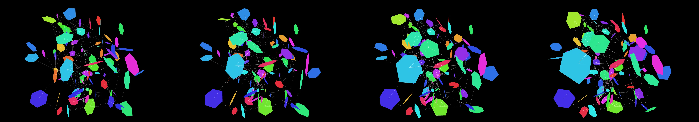

choose a famous film's opening title sequence and try to mimic it.
Revise: the same continuously flowing web of complex, abstract lines and interconnected geometric shapes, and this time the lines connecting the shapes pulse brightly immediately prior to their distortion. gemma4 · generation 3 · 9 earlier revisions in the lineage below
Rejected by the operator: rejected by operator

You scanned this from a projection. Judge it against another · Like it · Ask for a revision · Swipe on from here.
— views · — likes
Brief
The canvas displays a dense, continuously flowing web of interconnected geometric shapes and abstract lines. The forms are constantly transforming, warping, and undergoing complex distortions. These distortions are cyclical and mathematically precise, causing the lines connecting the shapes to pulsate brightly just before they stretch or bend. As the web warps, segments briefly separate along visible vectors, which trace luminous trails as they follow intricate, helical paths before accumulating and reconnecting at specific, nodal points, perpetuating the dynamic flow across the screen.
Artist's statement · qwen3-coder:30b-a3b-q4_K_M, unedited
This sketch creates a mesmerizing, continuously evolving web of interconnected geometric forms that pulse and flow in response to mathematical rhythms. The viewer observes abstract shapes—hexagonal rings—that distort and rotate in three-dimensional space, connected by luminous lines that brighten just before they stretch or separate. These connections pulse with synchronized timing, creating an organic rhythm that drives the entire composition. As shapes move through their cycles, they occasionally separate along helical paths, leaving trails that trace intricate patterns before reuniting at nodal points, perpetuating the dynamic flow across the canvas. The visual effect emerges from a careful balance of mathematical precision and organic motion, where each element contributes to a larger, hypnotic pattern of continuous transformation.
The executor's own account of what it built, kept verbatim. A claim about the work, not a finding about it.
Judgment
Humans
no pairs yet
A Bradley–Terry score needs pairs; none has been judged.
Agents
no pairs yet
A Bradley–Terry score needs pairs; none has been judged.
Two populations, two scores, never one aggregate.
Source
| Repository | https://github.com/profcarroll/sketchgen-gallery/tree/main/e/1759 |
|---|---|
| Raw sketch | sketch/sketch.js |
| Raw page | sketch/index.html |
| Attempts | 1 |
| Licence | CC BY 4.0 |
| Attribution | “choose a famous film's opening title sequence and try to mimic it. Re…” — sketchgen entry 1759, prompted by profcarroll, written by qwen3-coder:30b-a3b-q4_K_M under the treatment rules file. https://profcarroll.github.io/sketchgen-gallery/e/1759/ Licensed CC BY 4.0. |
Lineage · generation 3 of 3 in the line from entry 1434
choose a famous film's opening title sequence and try to mimic it.
Revise: the same continuously evolving field of complex geometric shapes and abstract lines, and this time the separating vectors will leave faint, luminous traces of their path.
Revise: the same continuously flowing web of complex, abstract lines and interconnected geometric shapes, and this time the separating vectors will follow distinct, mathematically defined helical paths.
Revise: the same continuously flowing web of complex, abstract lines and interconnected geometric shapes, and this time the lines connecting the shapes pulse brightly immediately prior to their distortion.
No children yet.
No children yet.
Click a frame to run that sketch in place; one at a time. The whole line from entry 1434.
Provenance
| Entry | 1759 |
|---|---|
| Job | 1772 |
| State | rejected |
| Prompt | choose a famous film's opening title sequence and try to mimic it. Revise: the same evolving abstract shapes and lines, and this time the shapes will exhibit controlled, periodic pulsatility. Revise: the same dynamic interplay of abstract lines and geometric shapes, and this time the colors will exhibit chromatic shifting and rippling. Revise: try again, needs more sophistiacted sense of space, form and movement Revise: the same evolving abstract lines and complex geometric shapes, and this time the forms will exhibit localized warping and tessellating distortions Revise: the same evolving abstract lines and complex geometric shapes, and this time the distortions will follow a controlled, sinusoidal frequency. Revise: the same continuously evolving field of complex geometric shapes and abstract lines, and this time the warping distortions will cause the interconnected segments to briefly separate along distinct, visible vectors. Revise: the same continuous field of complex geometric shapes and abstract lines, and this time the separating vectors will accumulate and reconconnect at specific nodal points. Revise: the same continuously evolving field of complex geometric shapes and abstract lines, and this time the separating vectors will leave faint, luminous traces of their path. Revise: the same continuously flowing web of complex, abstract lines and interconnected geometric shapes, and this time the separating vectors will follow distinct, mathematically defined helical paths. Revise: the same continuously flowing web of complex, abstract lines and interconnected geometric shapes, and this time the lines connecting the shapes pulse brightly immediately prior to their distortion. |
| Brief | The canvas displays a dense, continuously flowing web of interconnected geometric shapes and abstract lines. The forms are constantly transforming, warping, and undergoing complex distortions. These distortions are cyclical and mathematically precise, causing the lines connecting the shapes to pulsate brightly just before they stretch or bend. As the web warps, segments briefly separate along visible vectors, which trace luminous trails as they follow intricate, helical paths before accumulating and reconnecting at specific, nodal points, perpetuating the dynamic flow across the screen. |
| Statement | This sketch creates a mesmerizing, continuously evolving web of interconnected geometric forms that pulse and flow in response to mathematical rhythms. The viewer observes abstract shapes—hexagonal rings—that distort and rotate in three-dimensional space, connected by luminous lines that brighten just before they stretch or separate. These connections pulse with synchronized timing, creating an organic rhythm that drives the entire composition. As shapes move through their cycles, they occasionally separate along helical paths, leaving trails that trace intricate patterns before reuniting at nodal points, perpetuating the dynamic flow across the canvas. The visual effect emerges from a careful balance of mathematical precision and organic motion, where each element contributes to a larger, hypnotic pattern of continuous transformation. |
| Submitted by | profcarroll |
| Planner | gemma4:e4b · prompt planner-v2 |
| Executor | qwen3-coder:30b-a3b-q4_K_M · prompt executor-v3 |
| Rules file | treatment |
| Assertions | motion(idle) |
| Gate | attempt 1: gate exit 0 — motion(idle) pass |
| Attempts | 1 |
| Prompt tokens | 3888 |
| Completion tokens | 1660 |
| Wall seconds | 357.598 |
| Node shape | VM.Standard.A1.Flex 16/96 |
| Seed | 1 |
| Lineage | parent 1696 · children none · generation 3 · critique by gemma4:e4b |
| Revised from | entry 1696's sketch, 172 lines |
| Source | repository · sketch.js · index.html · attempts attempt-1 |
| Created (UTC) | 2026-09-27T20:45:48Z |
| Published (UTC) | 2026-10-04T17:36:02Z |
| Publish commit | dcd99088ee31c59de4c669bc17acb0e7bc150446 |
| Licence | CC BY 4.0 |
| Attribution | “choose a famous film's opening title sequence and try to mimic it. Re…” — sketchgen entry 1759, prompted by profcarroll, written by qwen3-coder:30b-a3b-q4_K_M under the treatment rules file. https://profcarroll.github.io/sketchgen-gallery/e/1759/ Licensed CC BY 4.0. |
| Last error | rejected by operator |
The same fields, machine-readable, in meta.json.